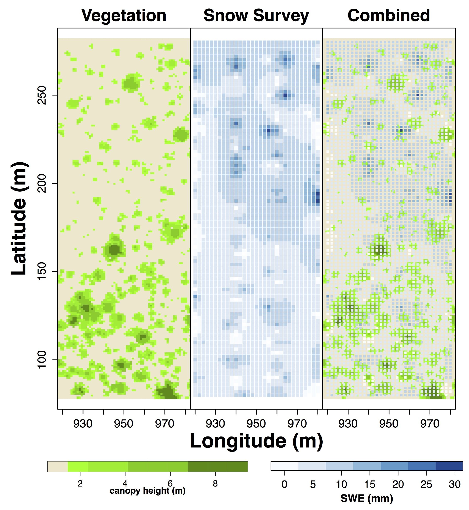
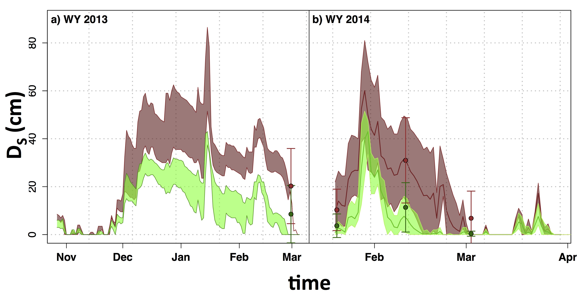
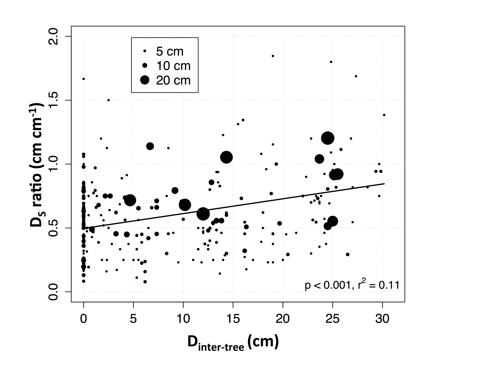
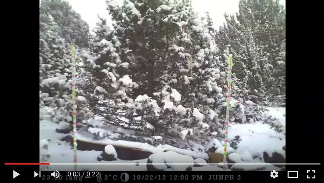

Snow
Snowpack Dynamics
Vegetation affects snow accumulation and snow melt. Differences in snowpack accumulation vary with canopy opening size, with smaller openings resulting in lower accumulation due to adjacent tree canopy interception, and larger openings reducing accumulation due to increased blowing snow (Pomeroy and Goodison, 1997). The ratio of tree height to opening size that results in the highest accumulation has been shown at 5 times in Colorado (Troendle and Charles, 1980) and 2 to 3 times in Alberta (Swanson, 1988). López-Moreno and Latron (2008) observed that for increasing forest density in snow-dominated temperate mountains, there was a decrease in snow accumulation (López-Moreno and Latron, 2008). While these studies were in boreal, pine, and mixed conifer-deciduous forests that are very different from Juniper areas, this information still reveals that snow accumulation varies with opening size. Our study at RCEW ...
Plot Level Snow Dynamics
Similar to previous studies in woodlands with seasonal snowpack, snowpack builds up in areas with fewer trees compared to areas with more trees. We can see in our plot at RCEW, that the southern portion of the plot with more juniper trees, there is a lower snowpack, compared to the northern portion of the plot with fewer trees but a larger build up snowpack.

figure caption: Vegetation is derived from a canopy height model derived from LiDAR data. Snowpack is derived from snow surveys on March 14, 2013, which was within nine days of peak snowpack (SWE) based on a continuous measurement at the site climate station.
Tree Level Snow Dynamics
Juniper impact snowpack dynamics at the tree level as well. Trees intercept snow which reduces the amount of snowpack below trees. But what is often ignored is that snows absorb sunlight which is then emitted to the snowpack below the tree which preferentially melts the snow. In the figure below, we can see that the snowpack below the tree builds up to a similar extent after a snow storm. But snow melts at a faster rate below the trees than in the interspace. Indeed, in water year (WY) 2014, we see that the snow is transient below the tree, but persists in the interspace until March.

figure caption: Average snow depth in interspace (brown) and under tree (green) for A) WY 2013 and B) WY 2014. Bold line is the average and outside border of the shaded region is the maximum and minimum snow depth. Circles are average snow survey snow depth under trees and in the interspace and error bars are one standard deviation. No average was plotted for WY 2013 due to a camera failure and only two stakes for both the interspace and canopy.
Another interesting impact that trees have on snowpack dynamics is preferential deposition of snow. Although trees do intercept snow, they also form tree wells or depressions in the snow surface at the base of trees. When another snow storm occurs, this allows for snow to be preferentially deposited under the tree. In the figure below, a D_s ratio of above 1 means more snow is deposited under the tree than in the interspace. And a greater D_s ratio, means more snow is deposited under the trees compared to the interspace. We see the difference in depth between the tree and interspace (D_inter_tree) gets larger, the more snow is deposited under the tree.

figure caption: Ratio of event snow depth under the tree to interspace (DS ratio) across snow events with a range of pre-event differences in snow depth between the interspace and under the tree (Dinter-tree), with increasing values representing greater depth of snow in the interspace than under the tree. Circle size denotes interspace storm snow depth.
Below is a link to a video (click the photo) of a snow storm that occured in October. You can see the snow interception, and subsequent snowmelt from the tree limbs, interspace, and below the tree. 
Information on this page is based on this publication, where you can find more detailed information about this study.